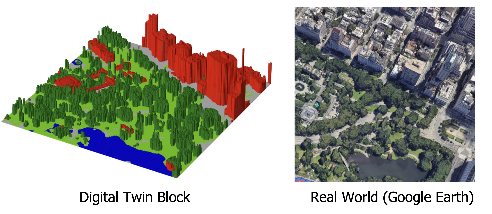

My research primarily revolves around large-scale 3D urban mapping and geospatial data analysis, utilizing deep learning and digital twin simulations. I am currently a PhD candidate in the Lyles School of Civil Engineering at Purdue University, where I am working in the Geospatial Data Science Lab.
← Me at 30th ACM SIGSPATIAL, Seattle, WA :)
Interests
- Digital Twin
- Urban Studies
- Remote Sensing
- Machine Learning
Research Projects
Digital Twin Cities
H. Song, J. Jung
We're working on an exciting project, creating digital twin cities across the U.S.! Our virtual replicas are being used for innovative studies. Here's a mini digital twin of a part of New York's Central Park: Link for Google Earth view.

LiDAR for 3D Hydrography
H. Song, J. Jung
Paper is on the way!
Unlike previous studies, our approach leverages the geometric and signal properties of water from topographic airborne LiDAR data, enabling scalable surface water mapping.
Our workflow extracts water segments based on the LiDAR's point density and extends the extent of each segment based on the robust assumption that the local water level is flat.
Our method can automatically extract the elevation of water segments as well!

New digital terrain model (DTM)
H. Song, J. Jung
Paper is on the way!
DTM is a 3-dimensional representation of the bare earth surface excluding any objects like plants and buildings.
Conventional DTM generation methods consider the "local-neighborhood" of a 3D point and classify non-ground points to create DTM.
However, in complex urban environments, considering "local context" is not enough.
Our method explores "global context" to create DTM and outperforms traditional methods.

Unsupervised 3D building mapping with LiDAR
H. Song, J. Jung
Paper

3D building maps are essential for digital twin cities and offer valuable information for various smart city applications.
We developed an unsupervised 3D building mapping pipeline using airborne LiDAR, which outperforms deep-learning-based methods in accuracy.
This pipeline won 1st place at the ACM SIGSPATIAL GIS Cup 2022!

Check out the following 3D building models via the web!! The taller the building, the darker color it has.
* 3D New York City
* 3D Denver
* 3D New Orleans
3D building map will be kept updated for the entire US. Please email me if you want to get TIFF image (Files are HUGE!)
Weekly supervised learning with crowdsourced data
H. Song, HL. Yang, J. Jung
Paper (IEEE JSTARS)
The crowdsourced label has a great potential for deep learning. However, the low quality of labels hampers the successful learning of the deep model. In this work, we propose a self-filtered learning that enables deep models to learn effectively with low-quality OpenStreetMap labels. Our method progressively refines training samples during the training process based on the loss of training samples.

Photovoltaic (PV) power forecast with meteorological satellite
H. Song,, G. Kim, M. Kim, Y. Kim
 Paper (IEEE APPEEC)
Paper (IEEE APPEEC)
An accurate PV power forecast is important for efficient power system planning in smart cities. We proposed a deep model that integrates multi-temporal meteorological satellite images and historical PV data for short-term PV forecasting. Our framework is being used on the platform of SKT, South Korea's largest wireless carrier. Also, I am very proud to have worked as the project manager for this project. (Thanks SKT for providing the cool GIF!)
Here is another work with my colleagues that compares the significance of implementing different meteorological satellite images for PV forecast.
Patch-based Light CNN: Land cover mapping with satellite images

H. Song, Y. Kim, Y. Kim
Paper (Remote Sensing)
The land cover map is quintessential data for various urban and environmental studies. The U.S. Geological Survey (USGS & MRLC) has been mapping land cover maps of the entire US for more than 20 years. One difficulty is the ground-truth is considerably site-dependent and not pure as one pixel's resolution is 30m by 30m. Our work presents that a very simply patch-based CNN model performs better by utilizing contextual information than conventional pixel-based algorithms.
Here is another piece of extended research for boosting performance based on the sample filtering.
Academia
- Ph.D. in Civil Engieering (2020-present)
- Advisor: Dr. Jinha Jung
- M.S. Civil and Environmental Engieering (2018-2020)
- B.S. Civil and Environmental Engieering (2012-2017)
- Advisor: Dr. Yongil Kim